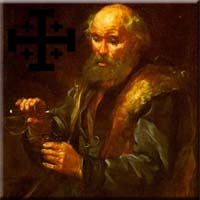
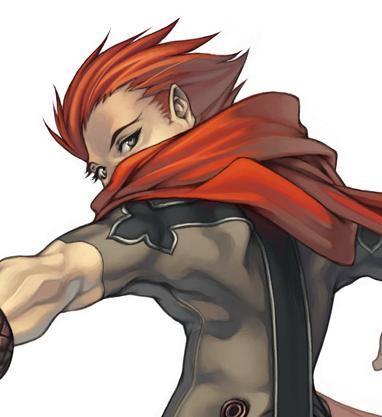
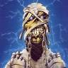

Forums galactiques > Assemblée Galactique : diplomatie officielle > L' A.N.A.L.
Pages : 1
| Herdes. Respect diplomatique : 377  20/06 ETU 22:57 | Score : 17 Détails Pour la première fois,Herdes semblait presque sobre et prenait un air serieux
OY OY OY Buveurs, Buveuses. Ce soir j'ai l'honneur de vous informer de l'ouverture de L'"A.N.A.L." Qu'est ce que l'"A.N.A.L."? Vous voulez un dessin?...Non l'A.N.A.L. est une coalition crée par Leyrn Morpheus et moi même. Cette coalition a pour but de lancer un esprit Joyeux sur Espérance. Elle permettra aussi à long terme de construire le plus grand complexe Alcoolique de la galaxie, qui contiendra plus de 50 BAR,CAFE,PUB ET AUTRES réunis dans un seul bâtiment! Pourquoi l'"A.N.A.L."? "A.N.A.L." signifie "les Alcooliques Non Anonymes Libertins" En résumé : Cette coalition a été crée en partie pour la bonne ambiance qui y règnera, tous les alcooliques y son les bienvenue, pour les questions constitutionnelle et autres, je laisse la parole à notre cher Leyrn Et n'oubliez pas: l'alcool c'est la vie Oui aussi : l'alcool c'est de l'eau de vie | ||
| Leyrn Morpheus Respect diplomatique : 175  20/06 ETU 23:00 | Score : 12 Détails -Voilà voilà, j'arrive.
Leyrn débarqua d'un pas pressé dans le noble hémicycle actuellement souillé par leurs conneries. Il avait dans les mains un longue feuille qu'il relisait à la va vite. Il arriva rapidement sur l'estrade, sans bien sur s'être auparavant étalé dans les marches, et commença son discours. - Oui mes amis, aujourd'hui est un grand jour. Celui qui voit naître une grande coalition. Aujourd'hui mes amis, est un jour de fête car L'A.N.A.L ouvre ses porte. - C'est louche dit comme ça... Mais bref de bavardage, tout de suite, la constitution: 1- Respecter les 9 commandements tu devras 2- Respecter le premier commandement tu devras. 3- L'alcool est divin, le vénérer tu devras. 4- Tous tes leems dans la boissons tu dépenseras 5- L'eau, de tes repas, tu banniras. 6- Boire de l'astro-pastis à t'en explosé l'estomac tu devras. 7- De tes comas éthylique tu te vanteras. 8- Tu sera masochiste et la gueule de bois tu apprécieras. 9- Du postérieur de Dame Yuna tu te moquera. (Yuna, si tu nous regarde) Tous les commandants posant leur candidature se devront donc de respecter ses préceptes sous peine de...sous peine de...on verra bien le moment venu. Cela dépendra de notre état. Bien, tout est dit. Nous attendons les autre alcooliques non anonymes. | ||
| torgal Respect diplomatique : 17  21/06 ETU 00:44 | Score : 4 Détails Torgal entra dans cette salle bien approprier à son alcoolisme
« Bonjour messieurs que dois-je faire pour faire parti de votre coa ? » Ensuite chercha un bar, comptoir, table pour s asseoir ou un banc (histoire de poser son `derrière`) « Vos règle me plaise bien ! Et me bourrer la gueule aussi » Ouvrir une binouse « A.NA.L s est un nom bien amusant quand on connais les coliques qu offre une cuite le lendemain ^^ » |
Pages : 1
Forums galactiques > Assemblée Galactique : diplomatie officielle > L' A.N.A.L.